01Вход
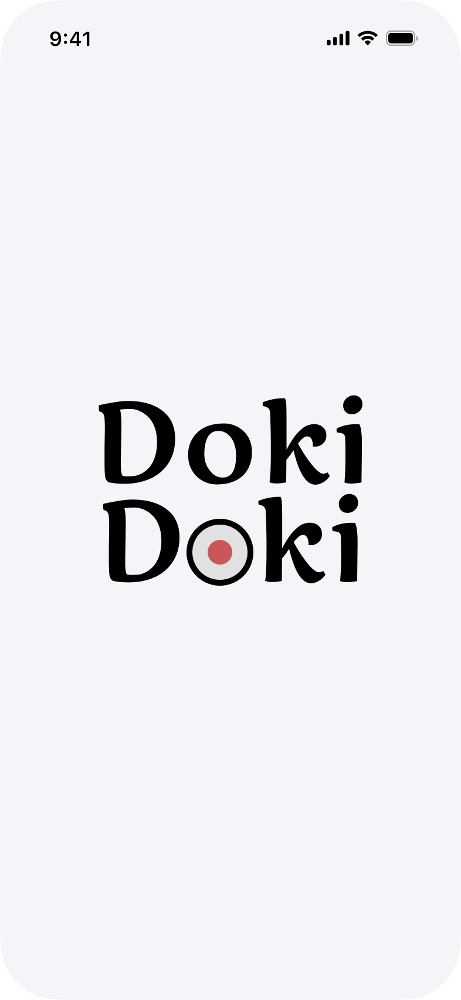
Фирменный экран запуска, сразу ведёт в меню.
В существующем приложении доставки заказ занимал слишком много шагов, а трекинг был непонятным. Переработал сценарий: сократил путь до оформления, провел редизайн и добавил понятный трекинг.

Спроектировать мобильное приложение для доставки суши с быстрым заказом и понятным трекингом. Дополнительно — провести UX-аудит существующего референса и показать, как улучшить пользовательский опыт.
Шесть шагов заказа. Каждый экран появляется по мере прокрутки, чтобы путь читался как история.

Фирменный экран запуска, сразу ведёт в меню.
Способ получения и район выбираются сразу, ниже акция, категории и популярные позиции с кнопкой «+».

Состав заказа, промокод, стоимость доставки и итог на одном экране; кнопка оформления всегда на виду.

Адрес, время и способ оплаты собраны на одной странице: Kaspi Pay, карта или наличные.
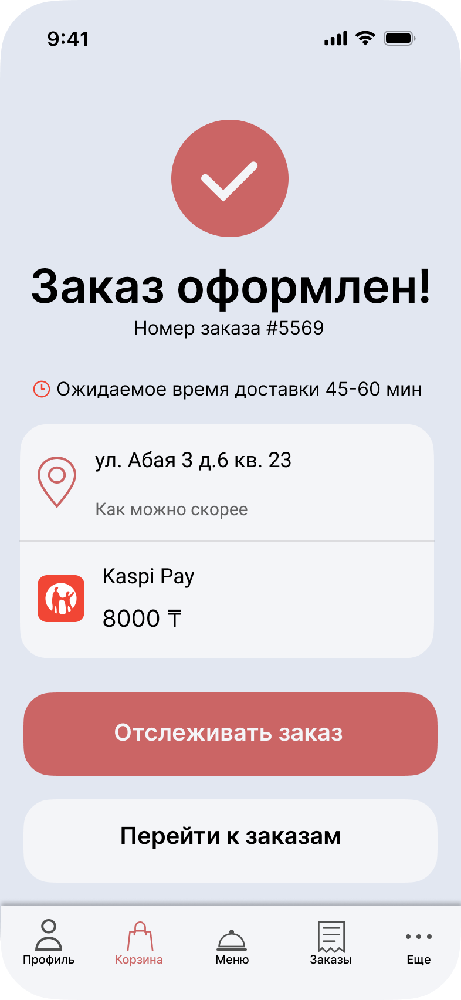
Номер заказа, ожидаемое время 45–60 минут, адрес и оплата. Дальше — отслеживание.
Четыре этапа заказа иконками, карта и время до курьера. Финальный этап подсвечивается зелёным.
Какие элементы референса меня не устраивали, почему я их изменил и чем обосновал решения.
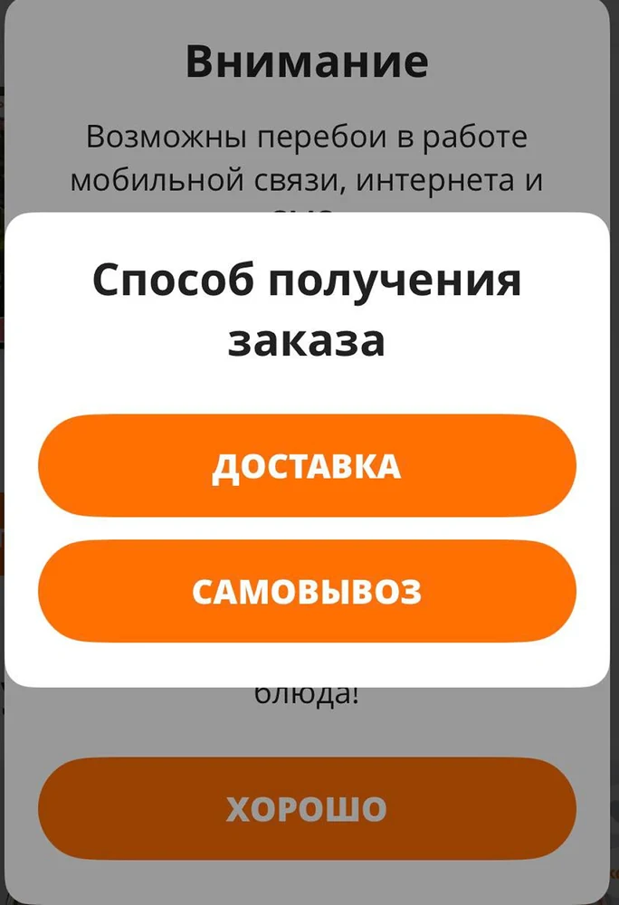
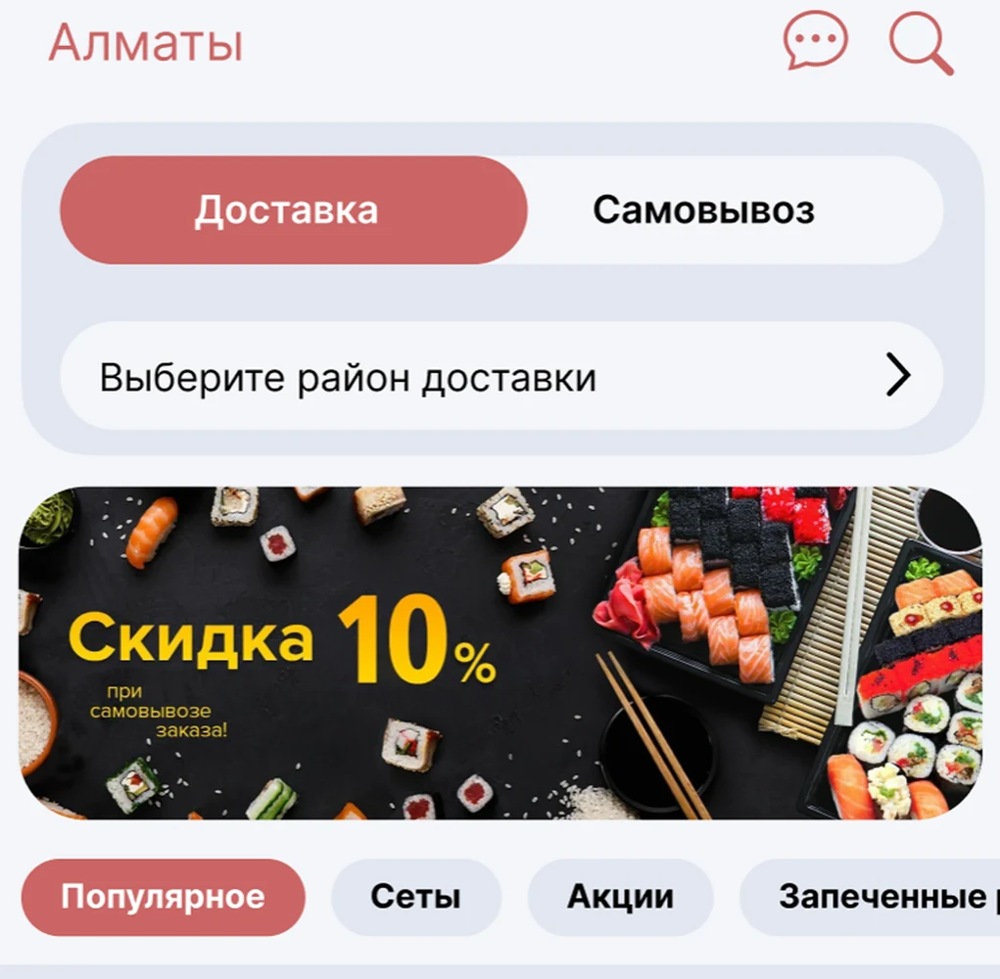
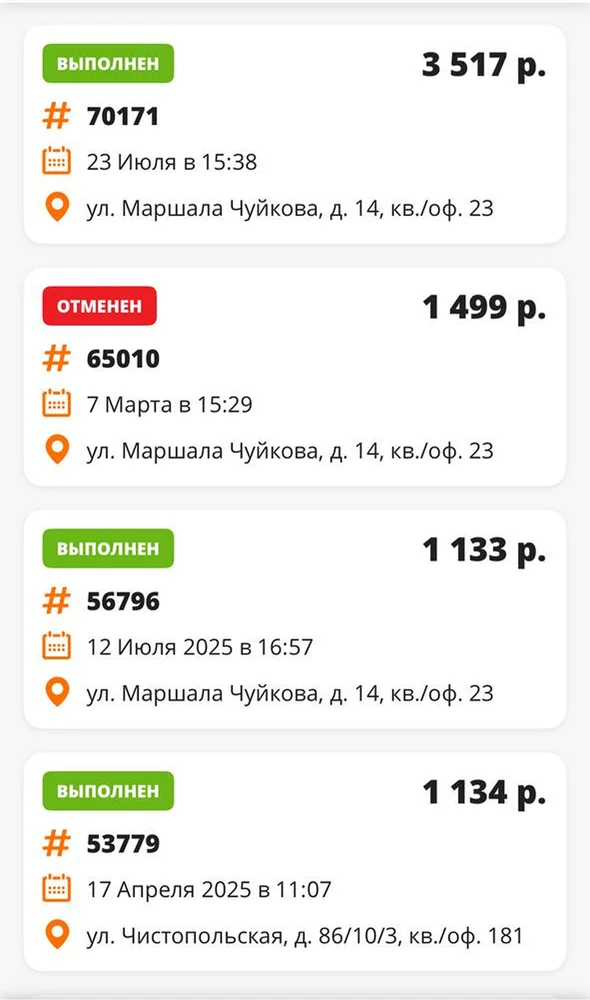
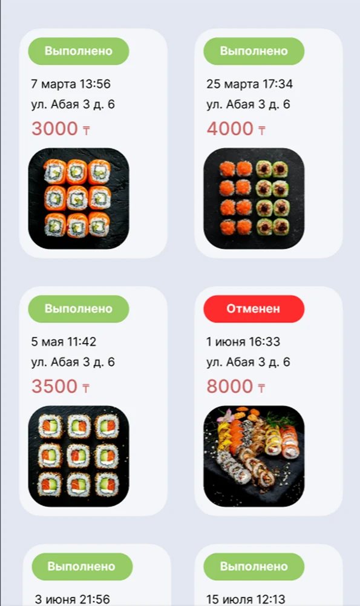
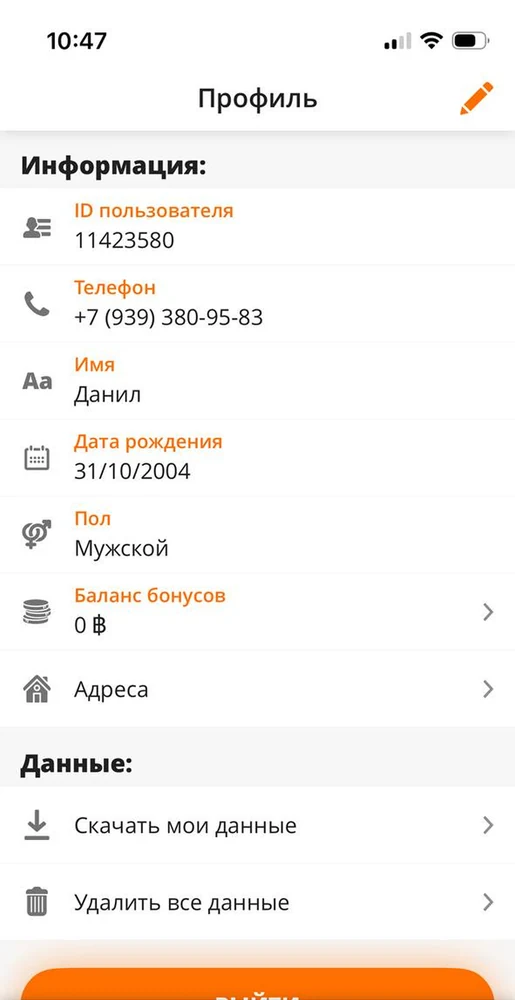
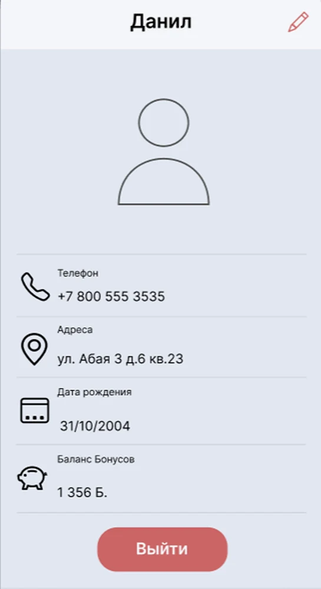
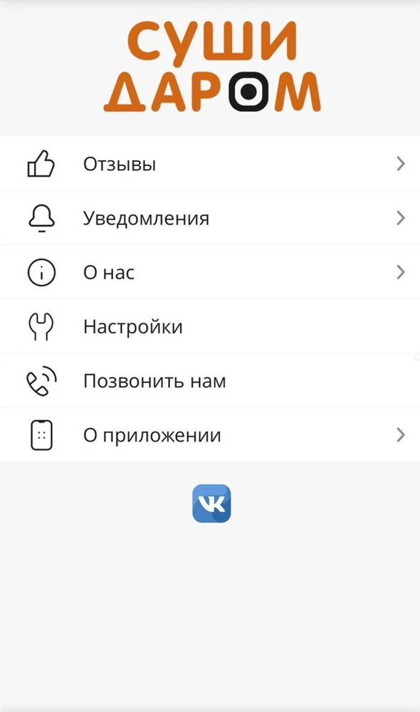
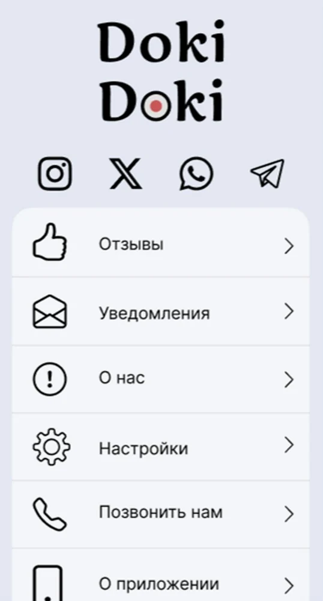
Один интерфейс, четыре ситуации: ожидание, сбой, пустота и успех. Веер собирает их в один набор. Наведи на экран, чтобы выделить пояснение.
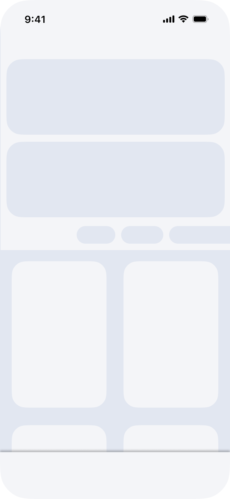
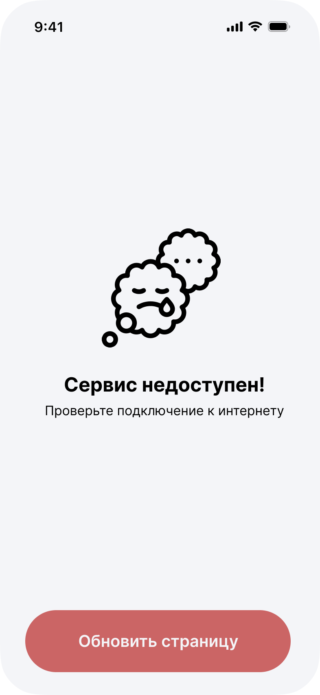
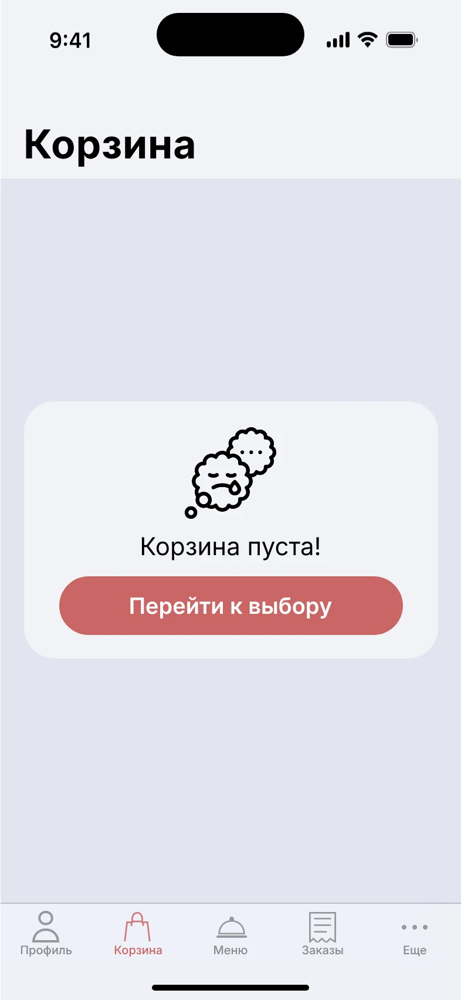
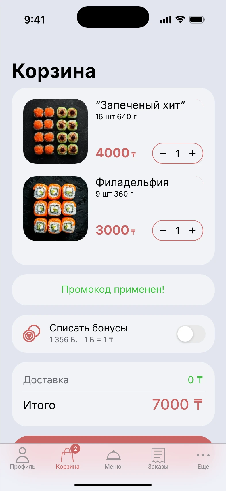
не знакомых с приложением сравнили Doki Doki с реальным приложением-референсом.
Скорость перемещения по интерфейсу увеличена на 20%.